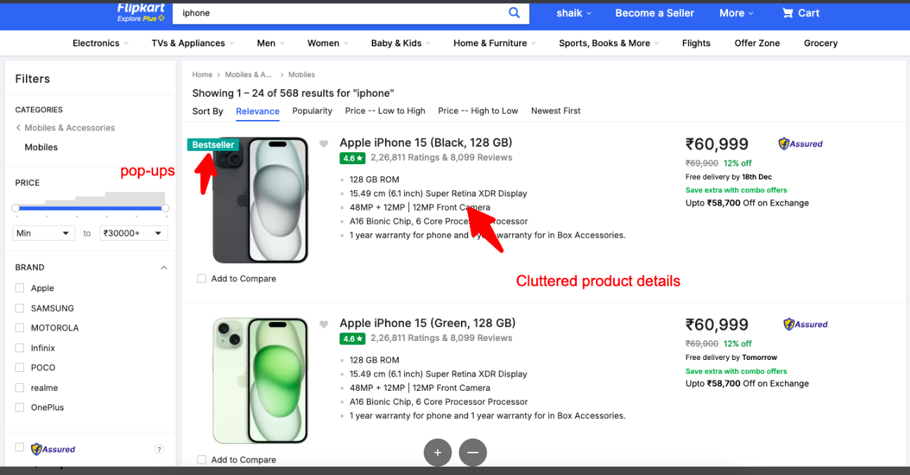
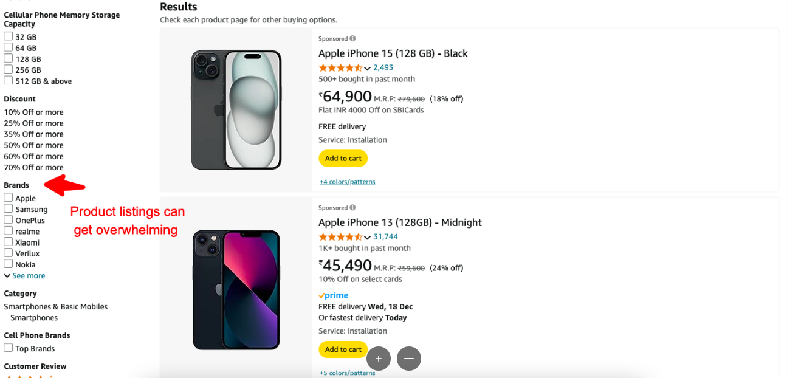
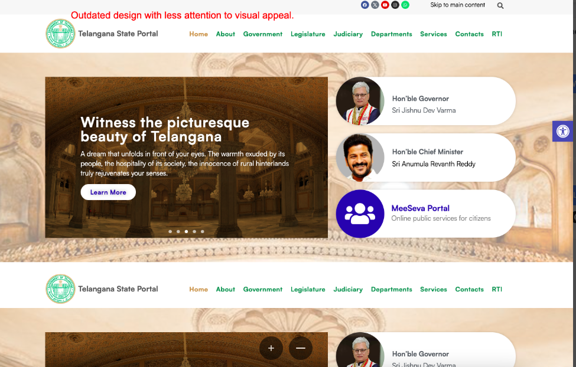
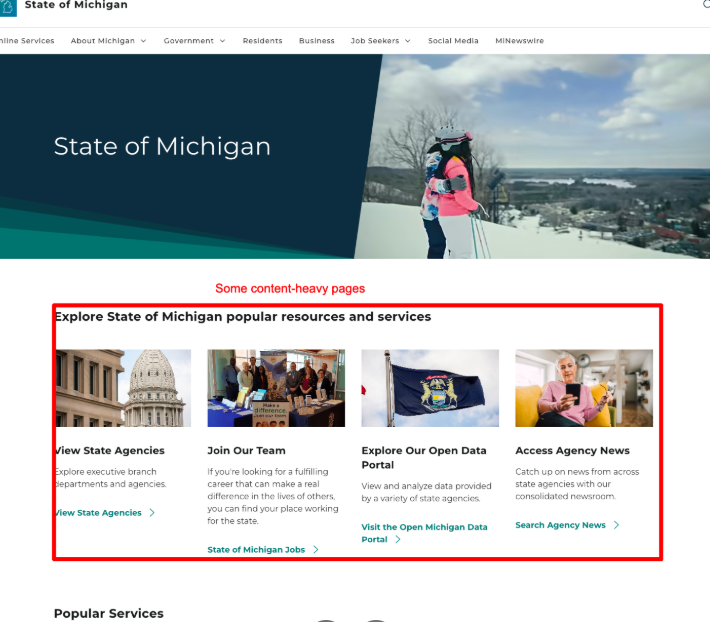

Flipkart vs. Amazon Mobile Phones
Flipkart Mobile Phones Page
Services Offered:
- Wide range of mobile phones across various brands.
- Price filters, product comparison, and reviews.
- Deals & Discounts section prominently displayed.
Design & Navigation:
- Clear, visually appealing layout with an emphasis on product display.
- Effective use of categories for better user navigation.
- Strong focus on pricing and discounts.
Areas for Improvement:
- Cluttered product details page with too much information.
- Overwhelming promotional banners and pop-ups.
Amazon Mobile Phones Page
Services Offered:
- Broad range of mobile phones with detailed descriptions.
- Customer reviews and ratings.
- Filters and recommendations based on browsing history.
Design & Navigation:
- Simple, clean design with easy-to-use filters.
- Minimalist approach to product presentation.
- Information-heavy pages with detailed product specifications.
Areas for Improvement:
- The design could be more visually engaging.
- Product listings can get overwhelming with the number of options.
Telangana vs. Michigan Government Websites
Telangana Government Website
Services Offered:
- Government services such as application forms, news, and policies.
- Links to various government departments and offices.
- Public access to tender notifications, e-services, and more.
Design & Navigation:
- Basic design with a focus on utility over aesthetics.
- Clear navigation for accessing public services.
- Cluttered homepage with too many options in the main navigation.
Areas for Improvement:
- Outdated design with less attention to visual appeal.
- Lack of mobile responsiveness in some sections.
Michigan Government Website
Services Offered:
- State government services like licenses, permits, and public records.
- Tax services, employment information, and legal resources.
- Access to state health services, and various citizen resources.
Design & Navigation:
- Modern design with a focus on simplicity and easy access to resources.
- Clear and concise category listings with intuitive navigation.
- Minimal visual distractions with a professional, clean layout.
Areas for Improvement:
- Some content-heavy pages could use better grouping and visuals.
- Could have a more dynamic, interactive homepage.